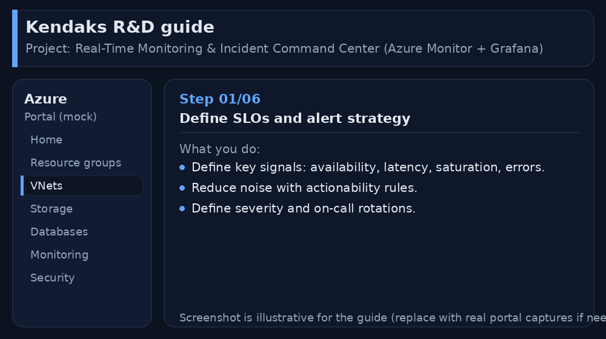
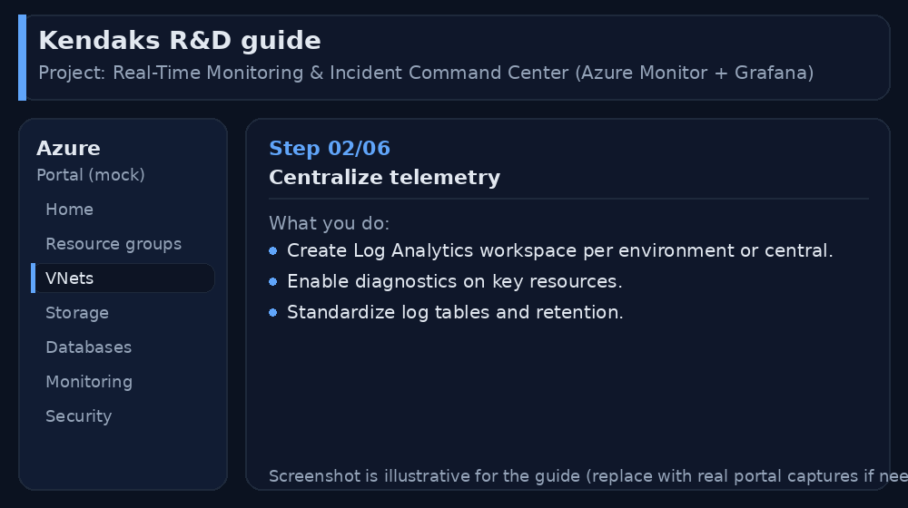
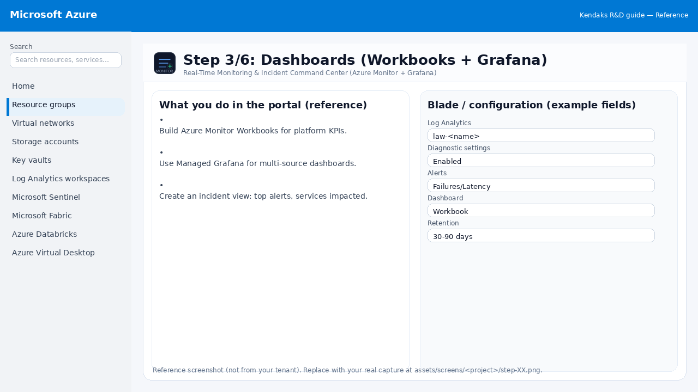
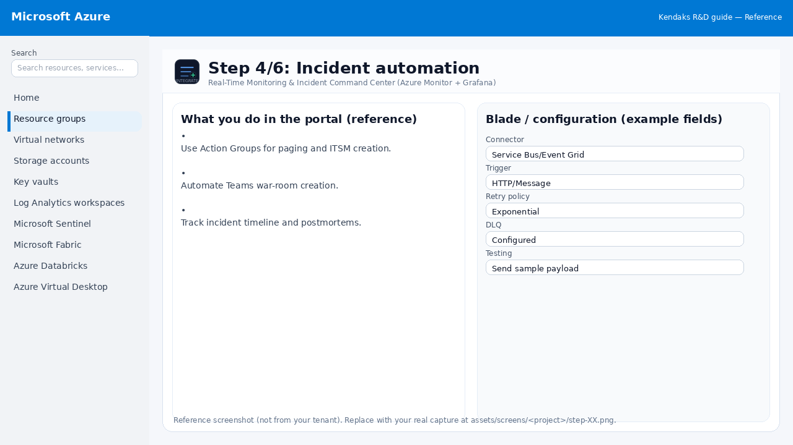
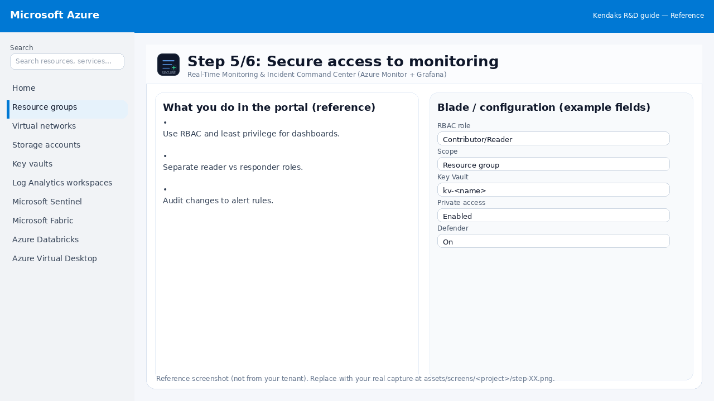
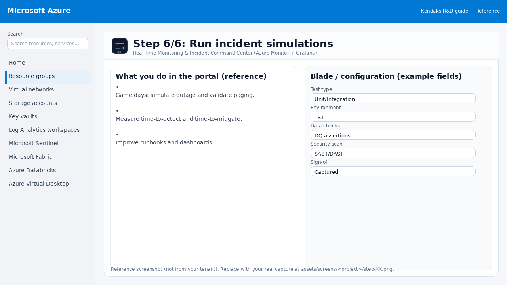

Real-Time Monitoring & Incident Command Center (Azure Monitor + Grafana)
Category: Operations
Scenario: NOC needs a single pane of glass for services, SLAs, and incidents. Example: 'Kendaks Command Center' uses dashboards, alerts, and war-room workflows.
Architecture diagram
High-level view of the main components and data/control flows.
Low-level architecture diagram (Visio-style)
Implementation view (networking, security, ops). Click to open full size.
Low-level architecture details
(No low-level text provided.)
Step-by-step implementation
Step 1/6
Define SLOs and alert strategy

Reference portal screenshot (click to zoom). Replace with your tenant capture if needed.
Define key signals: availability, latency, saturation, errors. Reduce noise with actionability rules. Define severity and on-call rotations.
Validation checklist
Stakeholders have signed off the scope, SLAs, and data/security requirements. You have documented naming standards, environments, and ownership (RACI).
Step 2/6
Centralize telemetry

Reference portal screenshot (click to zoom). Replace with your tenant capture if needed.
Create Log Analytics workspace per environment or central. Enable diagnostics on key resources. Standardize log tables and retention.
Validation checklist
Deployment completed; smoke tests passed; rollback plan confirmed.
Step 3/6
Dashboards (Workbooks + Grafana)

Reference portal screenshot (click to zoom). Replace with your tenant capture if needed.
Build Azure Monitor Workbooks for platform KPIs. Use Managed Grafana for multi-source dashboards. Create an incident view: top alerts, services impacted.
Validation checklist
Logs and metrics are flowing (check Log Analytics / Monitor). Alerts trigger correctly (test alert path to email/Teams/ITSM).
Step 4/6
Incident automation

Reference portal screenshot (click to zoom). Replace with your tenant capture if needed.
Use Action Groups for paging and ITSM creation. Automate Teams war-room creation. Track incident timeline and postmortems.
Validation checklist
Connections/authentication succeed and test messages/records flow through. Retries/DLQ/error handling are configured and validated with a forced failure.
Step 5/6
Secure access to monitoring

Reference portal screenshot (click to zoom). Replace with your tenant capture if needed.
Use RBAC and least privilege for dashboards. Separate reader vs responder roles. Audit changes to alert rules.
Validation checklist
Security baseline applied (Defender/Policy/WAF/Firewall rules as applicable). No public endpoints unless explicitly approved; private endpoints verified where applicable. Alerts are configured for high-risk events.
Step 6/6
Run incident simulations

Reference portal screenshot (click to zoom). Replace with your tenant capture if needed.
Game days: simulate outage and validate paging. Measure time-to-detect and time-to-mitigate. Improve runbooks and dashboards.
Validation checklist
UAT completed with representative users and scenarios. Performance meets baseline; issues tracked and remediated.